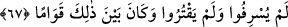

RAHMÂN’IN HAS KULLARI
63. Rahmân’ın (has) kulları onlardır ki, yeryüzünde tevâzu ile yürürler ve
kendini bilmez kimseler onlara laf attığında (incitmeksizin) “Selâm!” derler
(geçerler);
64. Gecelerini Rablerine secde ederek ve kıyam durarak geçirirler.
65. Ve şöyle derler: Rabbimiz! Cehennem azâbını üzerimizden sav. Doğrusu onun
azâbı gelip geçici değil, devamlıdır.
66. Orası cidden ne kötü bir yerleşme ve ikâmet yeridir!
67. (O kullar), harcadıklarında ne israf ne de cimrilik ederler; ikisi arasında orta
bir yol tutarlar.
“Rahmân’ın (has) kulları onlardır ki,” Dünyânın, şeytânın, nefis ve hevânın değil
Rahmanın kulları... demektir. Her ne kadar yaratılış bakımından diğerleri de O’nun
kulları olsalar da şereflendirmek ve üstün kılmak üzere Rahmân’a izâfe edilmeye ehil
değillerdir. Çünkü Allah’ın has kullarına ihsan edilen O’nun rahmetinin eserlerinden
olan aşağıdaki sıfatları taşımamaktadırlar. Dolayısıyla bu ifâde “Rahmân’ın makbul
kulları onlardır ki” demektir.
Yeryüzü / toprak huzûr, sükûnet ve tahammülde son noktadadır. “yeryüzünde tevâzu
ile yürürler”
“
” İsteyerek bir yerden bir yere intikal etmek, yürümek demektir.
“
(tevâzu ile)” el-Kâmûs’ta geçtiği üzere sekînet ve vakar ile demektir. el-
Müfredât’ta belirtildiğine göre ise insana eksiklik ve zillet getirmeyecek şekilde kendi
nefsinde alçak gönüllü ve mütevâzı olmasıdır.
“
” yumuşak huylu, âheste, mülâyim, yumuşak başlı demektir. Yâni onlar yumuşak
huylu ve mülâyim olarak kabalaşıp sertleşmeden yürürler. Ya da mülayim bir yürüyüşle
yürürler. Bu durumda mânâsı şöyledir: Onlar sukûnet ve tevâzû ile yürürler; öğünerek,
büyüklenerek, riya ve gösterişle yürümezler. Hak Teâlâ’nın azamet ve heybetini
bildiklerinden, O’nun büyüklük ve ululuğunu müşâhede ettiklerinden dolayı ruhları huşu
ve sükûnet bulmuş, nefisleri ve bedenleri O’na itâat edip boyun eğmiştir.